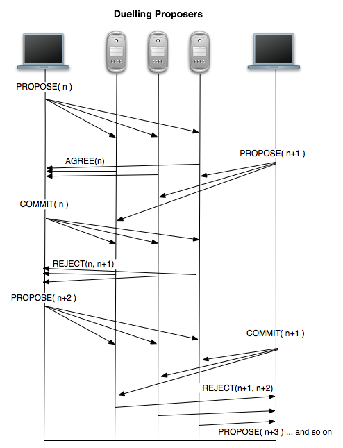

Paxos-based Key/Value Service

Developed a robust Paxos-based distributed key-value storage system in Go, ensuring high consistency with mutex under frequent server re-configurations and a 20% failure rate in the network.
Ensured the system's linearizability by adopting logical clock to maintain the sequential relationships between requests.
Optimized the system to support parallel communications between servers using multi-threading, resulting in a 15% reduction in response time.